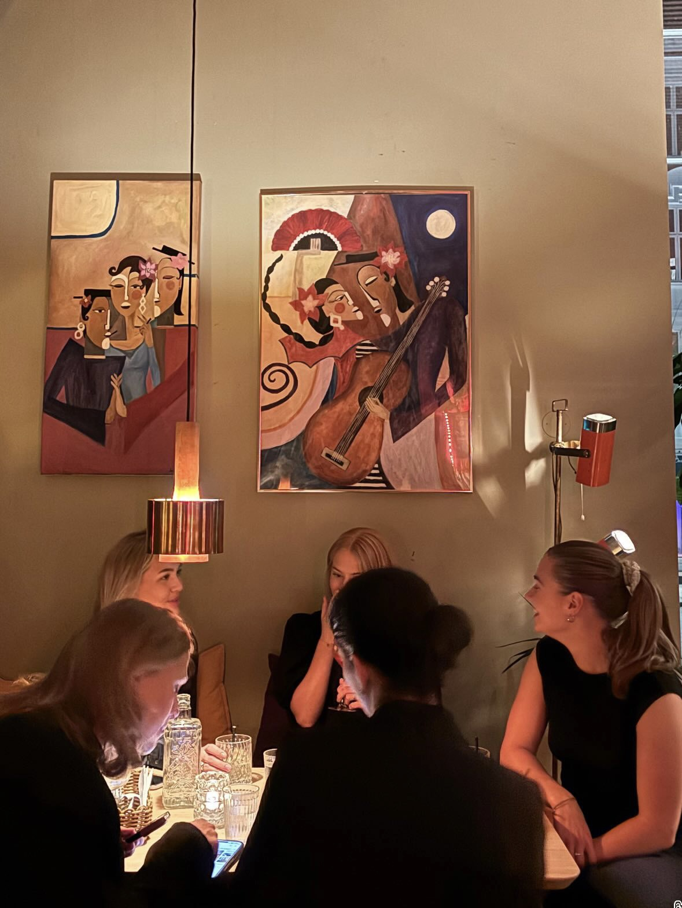

Om Anahita Eleonora

Anahita er en 24 år gammel jente som alltid har drevet med kunst i ulike former. Likevel valgte hun en mer teoretisk studieretning og startet på sivilingeniør studiet fordi hun tenkte at det ville være vannskelig å leve av kunsten. Selvom hun møtte flere nære venner på studiet og mange likesinnede så manglet hun et sted hvor hun kunne utrykke sin kunstersike side. Midt i studiene tok hun derfor et år fri for å reise til Latin-Amerika. Oppholdet, og spesielt tiden i Mexico, satte dype spor i både hennes indre liv og kreativitet, og ga ny retning til kunsten hennes.